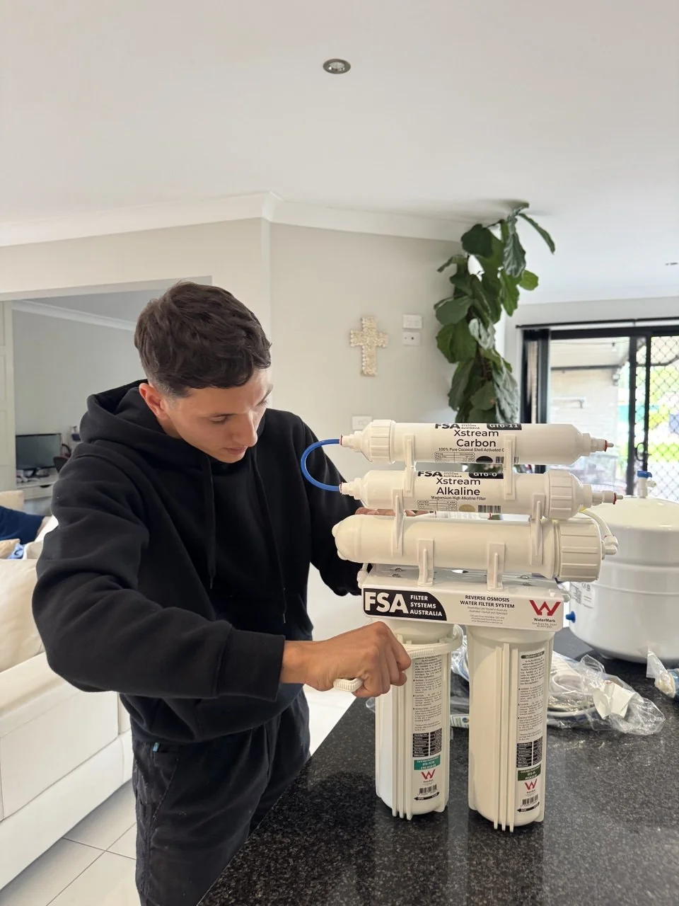

Pure Range Filter Cartridges
HPF Cartridges Inside Every Pure System
The Pure range uses High Performance Filtration filter cartridges and filtration media, the same Australian filtration technology inside the HPF-3 whole house system.

Pure CRC Catalytic Carbon Block
0.5µm catalytic carbon, removes chlorine, chloramine, VOCs, sediment, tastes and odours. NSF/ANSI 42, 53 & 61 compliant. High iodine value for maximum chemical reduction.

Pure CTO Carbon Block
Coconut shell carbon block (1µm & 5µm), reduces chlorine, sediment, tastes and odours. NSF/ANSI 42 compliant. Up to 100,000L chlorine reduction capacity.

Pure LPD Carbon Block
Low-pressure drop coconut carbon block (20µm), reduces chlorine, chloramine, VOCs, lead and heavy metals at high flow rates. NSF/ANSI 42, 53 & 61 compliant.